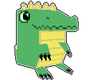
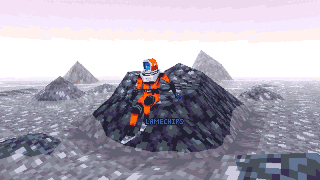
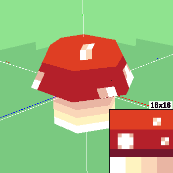
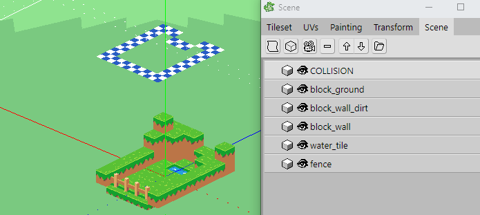
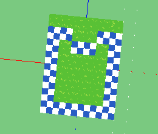
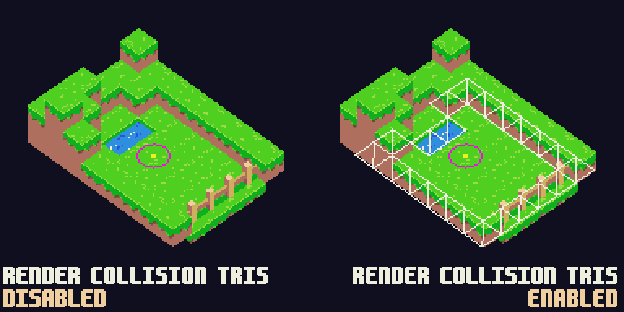
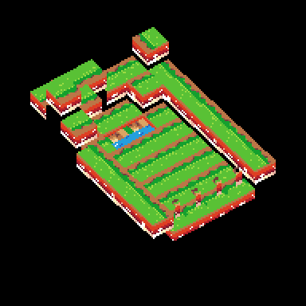

Using Crocotile3D with GameMaker
24 January 2021
This post is not sponsored in any way, I just really love Crocotile lol
As a GameMaker user building games in 3D, I replaced Blender with Crocotile a few months back and it has made the whole process quicker and much more enjoyable for me. Since then, I've found that I'm far from the only person using this combo of tools. Sometimes people will ask me questions about these tools or how I make my stuff, so I'm hoping this post can give some insight into how and why I use these programs together, as well as provide some ideas on how YOU can get started if you're interested.
Overview
Before we get into it, I want to emphasize that this post is not generally about doing 3D stuff in GameMaker, nor is it a guide on how to get started in 3D programming. It's really just me rambling about a handful of ways you can use Crocotile with GameMaker. I'll save the generalized discussion of 3D math and rendering in GameMaker for another time. There will also be some things here that are definitely doable with other programs like Blender, so if you don't have Crocotile but see something you wanna try out and think you can, then go for it!
In this post, I'm going to cover a few things:
- What is Crocotile3D?
- Why would you want to use Crocotile with GameMaker?
- How can you use Crocotile with GameMaker?
- Things to know when using Crocotile and GameMaker together
For this, I'll be using GameMaker Studio 2.3.1 and Crocotile 1.5.8. In theory, you should be able to do any of this stuff as long as you're using a version of GM that lets you open external files and build vertex buffers.

The Crocotile3D mascot in-program
What is Crocotile?
Crocotile3D is a 3D modeling program where you use 2D tilesheets to build low-poly scenes and objects. I find it to be very fast, functional, and -- most important, in my opinion -- easy. Coming from a GameMaker-heavy background, the ability to just throw down tiles in a scene feels very familiar. It reminds me of my earlier days grabbing tiles from SMB3 tilesheets and making entire levels piece-by-piece. Even for those unfamiliar with GameMaker's Room/Tile editor, I think Crocotile is pretty straightforward and accessible.
Why Would You Use Crocotile With Gamemaker?
Crocotile is great for retro, low-poly visuals. If you're into visuals like those of Minecraft, the Playstation 1, or the Nintendo DS, Crocotile is fantastic for that. Coincidentally, since GameMaker offers only the barest built-in support for 3D rendering and logic -- and thus lacks many of the optimizations a built-for-3D engine would have -- using a low-poly style is also a great way to get into 3D without immediately tanking performance.
Crocotile can also be used for more than just making static models, which I'll talk about more later in the post.

A character and scene I made in Crocotile, imported and rendered in GameMaker Studio 2
It's worth mentioning that Crocotile costs money, $25 (USD) to get the license. If you have the experience to utilize the tool well, or you don't mind dropping a little cash into a new hobby, then the price is more than worth it. While the free demo doesn't let you export your models, I strongly recommend trying it out first to see if the tool feels right to you.
( If you decide to buy Crocotile, I urge you do so directly through the developer's site. Steam takes a cut of all sales. )
How Can You Use Crocotile With GameMaker?
Here, I'll share some ideas and advice on how you can use Crocotile and GameMaker together that plays to both programs strengths. This is just a handful of ways to use the tools together, and I encourage you to get creative/experimental with it in your own projects!
1. Add A 3D Object To A 2D Game
This is one of the simplest ways you could use a 3D model in your GameMaker game. It's purely visual and works almost entirely off of GameMaker-provided functions. Crocotile's 1 unit == 16 pixels design + GameMaker's default orthographic camera means that it's quite easy to maintain a 'pixel perfect' appearance when your 3D model is thrown into the 2D scene. If your player sprite is 16x16 pixels, you can expect a 16x16 tile in your Crocotile model to be the same size*.
*When exporting an OBJ from Crocotile, you'll want to set the scale to x16 since Crocotile works by 1 unit == 16 pixels but GameMaker works by 1 unit == 1 pixel.

A legally-distinct mushroom modeled real quick in Crocotile
Keeping things simple with 3D in GameMaker means you really only need a handful of functions and variables to maintain everything.
/*** CREATE EVENT ***/
/* load_obj is a custom function. Assume it imports the OBJ as-is into a vertex buffer */
mushroom_buffer = load_obj( working_directory + "obj_mushroom.obj" );
rotator = 0;
/* need this so 'closer' faces overwrite 'further' faces */
gpu_set_ztestenable( true );
/*** DRAW EVENT ***/
/* To manipulate the position of vertex buffers, modify the world matrix */
rotator += 2;
matrix_set( matrix_world, matrix_build(
32, 32, 0,
rotator * -0.25, rotator, rotator * 0.5,
1, 1, 1
));
vertex_submit(
mushroom_buffer,
pr_trianglelist,
sprite_get_texture( tex_mushroom, 0 )
);
/* Reset the world matrix afterwards for safety */
matrix_set(matrix_world, matrix_build_identity() );
The mushroom OBJ, displayed in gamemaker via the code above
That's all there is to it. This is a quick and effective way to create an element that pops out, or to animate something that would be impractical to animate by hand.
2. Design Maps
Using a 3D map will quite literally add depth to your scene even if the logic all happens at a 2D level. You can make a retro FPS like Gun Godz, or a top-down game with 3D map elements like Pokemon Diamond/Pearl, all while mostly working with the functions that GameMaker provides for you.
Let's start with the following assumptions:
- The game will be top-down and the player never needs to move up or down, only along the ground
- The environment is non-destructible
- The player occupies a single point (as opposed to a mask/area)

A level quickly thrown together. My example is blocky like Minecraft, but you can style it however you want
I have multiple objects in my scene, and one of the objects is called COLLISION. For this object, I have a separate tileset loaded with checkerboard tiles, and I'm using the orthographic perspective so I can lay down tiles where I want the player to be stopped while keeping some physical distance between the visual model and the collision model.

Using the orthographic camera makes it easy to align tiles at different heights since there's no distortion/scaling like this is with a perspective camera
When exporting an OBJ from Crocotile, all of the objects you include in the export will be separated by g {OBJECT NAME IN CROCOTILE}. Because of this, when we parse the file in GameMaker, we can handle the faces under g COLLISION differently from the other polygons.
With the two assumptions listed at the start of this section, we get to do a few things that make this really easy to use:
- We can completely ignore the Z component of the collision tiles so that collisions are handled only by the XY components.
- We can build an unchanging array of triangles from the Collision object and do our collision checks with
point_in_triangle()where the Player is the point and the environment is the set of triangles.
Here's some code that:
- Imports the level, separating the collision model into an array of triangles instead of adding it to the vertex buffer
- Assigns a random location for the 'player' to move towards
- Checks the player against the triangles and prevents movement if a collision would occur
- Renders the model + collision array with an orthographic perspective
/*** CREATE ***/
/*
load_obj is a custom function. As opposed to the first example, it now returns an
array where [0] is the vertex buffer, and [1] is the array of triangles under
'g COLLISION' in the OBJ file
*/
var _obj_info = load_obj( working_directory + "obj_grasslands.obj" );
grasslands_buffer = _obj_info[ 0 ];
collision_array = _obj_info[ 1 ];
rotator = 0;
player_pos = [0,0];
target_pos = [0,0];
last_update_time = 0;
/*** STEP ***/
/* Update the player position randomly every little bit */
if (current_time - last_update_time > 1000) {
target_pos[0] = random_range( -128, 128 );
target_pos[1] = random_range( -128, 128 );
last_update_time = current_time;
}
var _new_pos = [ 0, 0 ];
var _dir_to_target = point_direction(
player_pos[0], player_pos[1],
target_pos[0], target_pos[1],
);
_new_pos[0] = player_pos[0] + 1*dcos(_dir_to_target);
_new_pos[1] = player_pos[1] - 1*dsin(_dir_to_target);
/* Check if the desired position would cause a collision against the triangles */
var _tri, _a, _b, _c;
var _hit = false;
var _arrlen = array_length( collision_array );
for(var _index=0; _index < _arrlen; ++_index) {
_tri = collision_array[ _index ];
_a = _tri[ 0 ];
_b = _tri[ 1 ];
_c = _tri[ 2 ];
_hit = point_in_triangle(
_new_pos[0], _new_pos[1],
_a[0], _a[1],
_b[0], _b[1],
_c[0], _c[1]
);
if (_hit == true) {
break;
}
}
/* Only update position if there were no predicted hits */
if (_hit == false) {
player_pos = _new_pos;
}
/*** DRAW ***/
/* Set the camera in place with an orthographic perspective*/
rotator += 2;
var _dist = 100;
var _view_angle = 45 + 10*dsin(rotator);
var _cx = dcos(_view_angle) * _dist;
var _cy = -dsin(_view_angle) * _dist;
var _cz = -_dist;
camera_set_proj_mat( 0, matrix_build_projection_ortho( 192, 192, 1, 32000 ) );
camera_set_view_mat( 0, matrix_build_lookat( _cx, _cy, _cz, 0, 0, 0, 0, 0, 1 ) );
camera_apply( 0 );
/* Draw the level */
vertex_submit(
grasslands_buffer,
pr_trianglelist,
sprite_get_texture( tex_grasslands, 0 )
);
/* Momentarily turn this on to force the lines to draw over the model */
gpu_set_zfunc( cmpfunc_always );
/* Draw the collision triangles */
draw_set_color(c_white);
var _tri, _a, _b, _c;
var _arrlen = array_length( collision_array );
for(var _index=0; _index < _arrlen; ++_index) {
_tri = collision_array[ _index ];
_a = _tri[ 0 ];
_b = _tri[ 1 ];
_c = _tri[ 2 ];
draw_line( _a[0], _a[1], _b[0], _b[1] );
draw_line( _b[0], _b[1], _c[0], _c[1] );
draw_line( _c[0], _c[1], _a[0], _a[1] );
}
/* Draw the 'player' */
draw_set_color(c_yellow);
draw_circle( player_pos[0], player_pos[1], 2, false );
/* Draw the target position */
draw_set_color(c_fuchsia);
draw_circle( target_pos[0], target_pos[1], 10, true );
gpu_set_zfunc( cmpfunc_lessequal ); // the default cmpfunc

The player is signified by the yellow circle, and the desired position is signified by the pink ring. The player gets stopped whenever a triangle is in the way of movement.
Yeah... it's not particularly efficient, but it does exactly what I need it to do for this example!
3. Build Navigable 3D Environments

An old gif of some 3D stuff I made in GameMaker Studio 2.3, with collision meshes, raycasting, skeletal animation, etc... it took a lot of time to be able to make something that looks and works like this in GameMaker.
I won't share any examples here, just some advice. For most people, if you're gonna need full 3D functionality -- collision, physics, all that stuff -- I would recommend you go with another engine like Unity. Doing 3D in GameMaker can be really fun, but it's far from easy and it takes a lot of time both to learn the concepts and implement them in a useful way. If you are really set on doing 'advanced' 3D work in GameMaker (or you already have, and you just wanna know how Crocotile can fit into it) then here are some basic tips for using Crocotile to help you out:
- Crocotile's layer/object system lets you build separate meshes for different purposes. When I build a level in Crocotile, I keep a separate collision model to help keep performance up in GMS. For example, if my level is just a flat plane made of 16 tiles (4x4), my collision model of the plain would just be a single tile stretched out to cover the same area.
- Crocotile's layer/object system exports the names of objects, which you can use for some tricks. As one example, something I like do to is place down 'markers' that GMS will use to spawn an object. In my case, the 'markers' are just singular quads. Anything objects prepended with 'mk_' will be interpreted on GameMaker's side of things as 'a marker to spawn a specific entity'. If I have 3 'mk_enemy' markers in the scene, this script would find 6 faces under
g mk_enemyin the OBJ file (2 tris for each of the 3 quads), find the center coordinates of each quad, and spawn something likeoEnemyat that point. - Since Crocotile exports standardized OBJ files, you can further work on your models in Blender or something like that. This can be useful if you plan to animate your models, or feel more comfortable assembling your scenes outside of Crocotile. Additionally, Crocotile recently added support for importing multiple file types, so you can import models that you started elsewhere.
- I really encourage you try something new and weird with it. When you're essentially building your own 3D engine, you have full control over how things work, so why not experiment? If youre up to it, use it as an opportunity to create 3D behavior and spaces in a way that existing engines usually don't.
Some Things To Know When Using Crocotile with GameMaker
This last part is list of little things I've learned while using these 2 programs together. I may come back later and expand this list with any little details I learn.
Crocotile, at this point in time, is hard-coded to export with a certain orientation. The 3D orientation in GameMaker is up to you, but I would recommend keeping the XY plane as your 'horizontal' plane and the Z axis as your up+down. This makes it easier to use functions that GM provides without having to remember stuff like "oh, right, I need to be using Z instead of Y for point_direction() now". The downside of doing this, though, is that you'll need to manually reorient any OBJs imported to GameMaker from Crocotile. To handle this aspect of Crocotile, you have a few options:
You can manually flip and move coordinates around in your OBJ import function, which works fine as long as all your OBJs are oriented the same, or if you have a separate version of the function for Crocotile's exported OBJs.
You can reorient the models before importing. In my case, I've written a Python script that reorients the values to be GameMaker-ready and adds a
# REORIENTEDto the top of the file so that future runs of the script know to skip that model.
Crocotile lets you break your tiles up into 2 triangles and delete any you don't need. Just be aware that doing so doesn't actually remove the triangle, but rather makes it degenerate (two vertices share the same position). For rendering this is usually fine, but be aware that some collision and raycasting algorithms don't account for this and may give you weird results. You can circumvent this by enabling
merge verticeswhen exporting.GameMaker, by default, does no front/back-face culling. You'll need to enable this with
gpu_set_cullmode(). Conversely, Crocotile starts with backface culling on by default. You can press9to toggle this on and off -- just be aware that if you keep it turned off in Crocotile, it becomes very easy to place tiles facing the 'wrong' way without realizing, which will then be incorrectly culled in GameMaker if you turn GM's culling on. I recommend hitting9a few times every once in a while as a sanity check.If a texture you want to use does not have 'Separate Texture Page' enabled, you'll want to use
sprite_get_uvs()when loading the OBJ to properly recalculate the uvs from their default 0-1 range. Unless you're using a lot of textures, though, it's probably fine to just enable 'Separate Texture Page'. For reference, if you don't properly map/adjust the UVs when importing, your model will probably look like this:

Note how the mushroom texture + some blank texturing now also appear on the model. This is because the model expects to find it's texture occupying 100% of the texture page, but without 'Separate Texture Page' enabled, the intended texture only occupies a portion of it's page, alongside any other textures not marked for separation.
Closing
I hope that this post was either helpful, inspiring, or entertaining for you. I believe in fun and creativity above all else, and I would like to emphasize again that this is not the end-all-be-all guide on using Crocotile with GameMaker -- it's just bunch of anecdotal advice and gifs.
Here's a list of relevant links:
- Crocotile3D's Website
- Crocotile3D's Gallery
- Middleman's / @SpectreSkully's Twitter (Creator of Crocotile)
- GMS2's Guide on Building Vertex Buffers
- Wikipedia's entry for the Wavefront OBJ Spec
If there's anything about the GameMaker + Crocotile combo you'd like to know that I haven't talked about here, you can find me on Twitter! That would also be the place to let me know if any of the information here is objectively wrong, just don't be rude about it cuz I probably won't respond in that case :)